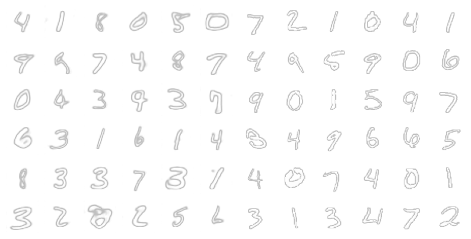

Latent Diffusion Series: Latent Diffusion Model
In the Latent Diffusion Series of blog posts, I'm going through all components needed to train a latent diffusion model to generate random digits from the MNIST dataset. In the third, and last, post, we will finally build and train a latent diffusion model which will be trained to generate random MNIST digits. For the other posts, please look below:
- MNIST Classifier
- Variational Autoencoder (VAE)
- Latent Diffusion Model
The links will become active as soon as they the posts are completed. Even though this blog post is part of a series, I will try my best to write it in such a way that it's not required to have read the previous blog posts.
In this post I will discuss Diffusion Models and more specifically, Latent Diffusion Models, which are trained to denoise latent representations. This enables us to generate anything we have a large dataset of by sampling noise from a normal distribution and denoising it using a diffusion model trained for this task. Here we will build a latent diffusion model using components from the previous two posts and train it on the MNIST dataset, and compare the results we got when we generated digits using a VAE. If you'd like a bit more about the MNIST dataset or VAEs, please look at the previous blog posts linked above. I have created a Python notebook on Colab, which you can use to follow along and experiment with this post's code.
Diffusion Model
I briefly introduced diffusion models in the first post, but here I'll give a more extensive overview. As I mentioned there, diffusion models were first developed as generative models for generating samples that follows the original dataset distribution. The goal of a generative models is to learn to model the true data distribution from observed samples, so that generating new samples is as simple as sampling the learned distribution. Diffusion models achieve this by corrupting the dataset with progressively larger amounts of noise, leading to samples with pure noise, and training a set of probabilistic models to reverse the corruption step in the probabilistic sense. This reverse problem is made tractable by using knowledge of the functional form of the reverse distributions.

When I first researched diffusion models, I started with the original paper by Sohl-Dicksten et al, 'Deep Unsupervised Learning using Nonequilibrium Thermodynamics'1, which as the name suggests, is inspired by non-equilibrium statistical physics. I spent some time with this paper, but I quickly realised that it's not the best paper to read as an introduction to diffusion models. It doesn't make it easy to understand how to actually build and train a diffusion model. Fortunately, diffusion models are old enough by now that later papers have made various simplifications and have managed to give easier to understand explanations. On the other hand, because diffusion models have been derived in a number of different ways; from stochastic differential equations to score-based models6, it can make it frustrating to understand the relationship between the different derivations, and can lead to mixing up concepts. While researching for the easiest way to explain diffusion models, I stumbled upon a paper, 'Iterative α-(de)Blending: a Minimalist Deterministic Diffusion Model' 3, I thought that this might be the best candidate, but something bothered me about it; I was missing the motivation behind the derivation. In the end I found this motivation in stochastic interpolants 4 which describes the diffusion process as a way of efficiently moving through the flow field defined by probability distribution of the intermediate steps. Stochastic interpolants, as you might have guessed, is also not that easy to understand, especially if you are not familiar with certain topics in mathematics such as measure theory — although it migh be a nice challenge to make it understandable to a broader audience. Thus, I decided that in this blog post I would concentrate on briefly explaining the paper by Ho et al titled 'Denoising Diffusion Probabilistic Models' (DDPM), which is also the one referenced in the seminal LDM paper 5, and leave the above discussion open for a blog post in the near future.
If you are interested to learn more about diffusion methods and alternative approaches, I suggest you start by the amazing blog post by Miika Aittala, and then check the posts by Yang Song, Lilian Weng, and Sander Dieleman.
Let us now describe the diffusion process which diffusion models learn to reverse. Given a dataset with distribution \( q(x) \), the diffusion process defines a sequence of steps, N, in which samples of the distribution at step \(t\) are mapped to a new distribution at step \(t+1\) by adding Gaussian noise to them. We refer to the samples in each step of the distribution as \(x_t\) and the corresponding distributions as \(q(x_t)\), with \(x_0\) referring to the original data distribution. We can write: \[ \begin{align} \tag{1} \label{eq:noise_process} q(\mathbf{x}_t | \mathbf{x}_{t-1}) &= \mathcal{N}(\mathbf{x}_t; \sqrt{1 - \beta_t} \mathbf{x}_{t-1}, \beta_t \mathbf{I})\\ q(\mathbf{x}_1, \mathbf{x}_2,...,\mathbf{x}_T | \mathbf{x}_0) &= \prod_{t=1}^T q(\mathbf{x}_t | \mathbf{x}_{t-1}) \end{align} \] \(\beta_t \in (0,1)\), here is called the variance schedule and controls how much noise to add at each step. For large T, and assuming \(\beta_T = 1\), you will see that the probability distribution approaches the standard Gaussian distribution. The fact that a large \(T\) is needed is a pain point of standard diffusion models, and something we might discuss in a next blog post. The diffusion process we just defined is also known as a stochastic process, which is really just a sequence of random variables. Also note from equation \eqref{eq:noise_process}, that the distribution of the data at step \(t\) depend only on the previous step. This is a property know as a Markov property and such processes are known as Markov Chains. The process might also remind you of the VAE we studied previously; diffusion models can be seen as stacked VAEs with fixed latent dimension across timesteps, and at each timestep the latent encoder is not learned but simply a Gaussian centered at the latent variable of the previous step. A significan aspect of diffusion models that allows us to train a model efficiently is the fact that \( \mathbf{x}_t \) can be sampled at arbitrary timesteps \(t\), \[ \tag{2} \label{eq:forward_distribution} q(\mathbf{x}_t | \mathbf{x}_0) = \mathcal{N}(\mathbf{x}_t; \sqrt{\bar{\alpha}_t} \mathbf{x}_0, (1 - \bar{\alpha}_t) \mathbf{I}) \] where \(\bar{\alpha}\) are derived from the variance schedule, \[ \bar{\alpha}_t = \prod_{s=1}^t \alpha_s = \prod_{s=1}^t (1 - \beta_s) \] Equation \eqref{eq:forward_distribution} can be reparametrized so that we \(\mathbf{x}_t\) can be sampled as, \[ \tag{3} \label{eq:forward_sample} \mathbf{x}_t \sim \sqrt{\bar{\alpha}_t} \mathbf{x}_0 + \sqrt{1 - \bar{\alpha}_t} \mathbf{\epsilon} \] where now \(\mathbf{\epsilon}\) is sampled from a standard gaussian, \( \mathbf{\epsilon} \sim \mathcal{N}(\mathbf{0},\mathbf{I}) \)
Now, the goal of the diffusion model is to learn the reverse process, i.e. going from the noise, \(x_T \in \mathcal{N}(0, \mathbf{I})\) to some point in the original data distribution. The reverse diffusion process is defined by, \[ p(\mathbf{x}_{0:T}) = p(\mathbf{x}_T) \prod_{t=1}^T p(\mathbf{x}_{t-1} | \mathbf{x}_t) \] Practically, it's difficult to calculate the reverse transition probability \(p(\mathbf{x}_{t-1} | \mathbf{x}_t)\), so instead we parametrize it using a neural network with parameters \(\theta\), and we assume the reverse process to also follow a Gaussian ditribution, \[ \tag{4} \label{eq:reverse_prob} p_{\theta}(\mathbf{x}_{t-1} | \mathbf{x}_t) = \mathcal{N}(\mathbf{x}_{t-1}; \mu_{\theta}(\mathbf{x}_t, t), \Sigma_{\theta}(\mathbf{x}_t, t))\\ \] Then, similarly to VAEs, we can derive a loss using the Evidence Lower Bound (ELBO). The derivation is quite involved, so I will spare you the details here. When deriving the loss, a Kullback–Leibler divergence appears between the forward and backward distributions and so we approximate the reverse transition probability with a Gaussian distribution, to more closely match the forward distribution, making it indeed similar to a VAE. Finally, after several simplifications, Ho et al. 8 came up with the following loss: \[ \tag{5} \label{eq:loss} L_{\theta} = \mathbb{E}_{t,\mathbf{x}_0,\mathbf{\mathbf{\epsilon}}} \left[ \lVert \mathbf{\epsilon} - \mathbf{\epsilon}_{\theta}(\mathbf{x}_t, t) \rVert^2 \right] \] where \(\theta\) are the model parameters, and \(\mathbf{\epsilon}_{\theta}\) is the model which is being trained to predict the \(\mathbf{\epsilon}\). To train the model, we then sample \( \mathbf{x}_0 \) from the training dataset, randomly select a step \(t \in {1,...,T}\), and sample \(\mathbf{\epsilon} \sim \mathcal{N}(\mathbf{0}, \mathbf{I})\). We then calculate the result of the forward diffusion on \( \mathbf{x}_0 \) using equation \eqref{eq:forward_sample}, and finally calculate the loss, above.
For the reverse process, e.g. sampling an image from pure noise, we first sample a \(x_T\) from a standard Gaussian, and use the reverse transition probability (equation \eqref{eq:reverse_prob}) to iteratively sample the next \(x_t\). Given that we train a network to predict the added noise at each step, it can be shown that7, \[ \tag{6} \label{eq:reverse_mean} \mu_{\theta}(\mathbf{x}_t, t) = \frac{1}{\sqrt{\alpha_t}} \left( x_t - \frac{1 - \alpha_t}{\sqrt{1 - \bar{\alpha}_t}} \epsilon_{\theta}(\mathbf{x}_t, t) \right) \] For \(\Sigma_{\theta}\), though, we are free to choose. Ho et al, for example, found that making \(\Sigma_{\theta} = \sigma_t^2 \mathbf{I}\) and setting \(\sigma_t^2 = \beta_t\) or \(\sigma_t^2 = \tilde{\beta}_t\), both gave good results. Here, \(\tilde{\beta}_t\) is defined as, \[ \tilde{\beta}_t = \frac{1 - \bar{\alpha}_{t-1}}{1 - \bar{\alpha}_t} \beta_t \]
With the theory out of the way, let us now introduce the model architecture and training code. We will use a Unet, similar to the autoencoder or VAE in the previous blog post, but we will now also pass the time variable, \(t\) along. To propagate the time information through the network, it was found that using a so called sinusoidal positional embedding5,8 can be effective. The sinusoidal positional embedding was first introduced in the seminal transformer paper10, which I'm reproducing here with the token position replaced by the time, \(t\): \[ \begin{align} PE_{t, 2i} &= \sin(t / s^{2i / d_{emb}})\\ PE_{t, 2i+1} &= \cos(t / s^{2i / d_{emb}}) \end{align} \] where \(s\) is some appropriately chosen scale and \(d_emb\) is the model embedding size. To get a better intuition on how this embedding works, you can take a look at this blog post, but basically it boils down to wanting to have some measure of distance between two (time) positions that follows from the dot product of the embeddings. The sinusoidal positional embedding has this property, indeed. In Python we implement the embedding as torch module as follows,
class SinusoidalPositionalEmbedding(torch.nn.Module): def __init__(self, dim=16, scale=1000): super().__init__() half_dim = dim // 2 emb_scale = math.log(scale) / (half_dim - 1) self.emb_factor = torch.exp( -emb_scale * torch.arange(half_dim, device=device) ) def forward(self, time): embeddings = time[:, None] * self.emb_factor return torch.cat((embeddings.sin(), embeddings.cos()), dim=-1)
where we perform the calculations in log-space and apply the exponential function in end, which makes sure we don't overflow when calculating the ratio inside the sine and cosine.
The UNet we will be using here is very similar to the one we used before, only we pass the time embedding into each convolutional block, which is then added to the output of the convolution.
class TimeEmbeddingConvBlock(torch.nn.Module): def __init__(self, fin, fout, tin, *args, **kwargs): super(UnetConvBlock, self).__init__() self._conv = torch.nn.Conv2d(fin, fout, *args, **kwargs) self._norm = torch.nn.InstanceNorm2d(fout) self._relu = torch.nn.LeakyReLU() self._emb_linear = torch.nn.Linear(tin, fout) def forward(self, x, t_emb): t_emb = self._emb_linear(self._relu(t_emb)) x = self._conv(x) return self._relu(self._norm(x) + t_emb[:,:,None,None])
Because the model is virtually identical to the one in the previous blog post, I refer the reader to that post.
We now need to define the variance schedule we will use. There are different options here, but two popular ones are either a linear or a cosine schedule 7.
def make_cosine_schedule(num_timesteps, s=0.008): t = torch.arange(num_timesteps+1) x = 0.5 * (t / (num_timesteps+1) + s) / (1.0 + s) * math.pi alpha_prod = torch.cos(x)**2 alpha_prod = alpha_prod / alpha_prod[0] return alpha_prod[1:] def make_linear_schedule(num_timesteps=1000, start=1e-4, end=2e-2): betas = torch.linspace(start, end, num_timesteps) alpha_prod = torch.cumprod(1.0 - betas, dim=-1) return alpha_prod
We can plot this schedule for e.g. 1000 time steps to get a feeling of how \( \bar{\alpha}_t \) changes.

In my experience, for small problems like the MNIST, the linear schedule seems to be a bit better, although the cosine model can also work fine if you increase the parameter, s, significantly. Here I will choose the linear schedule for the rest of the blog.
Let us now implement equation \eqref{eq:forward_sample}, which will help us with the training. The function will take as input the model, a sampled latent, \(x_0\), and a time \(t \in [1,T]\), and calculate the corresponding prediction error (loss) of the model from the diffused sample, \(x_t\).
def do_step(model, x_0, t): eps = torch.randn(x_0.shape, device=device) ap = alpha_prod[t-1].view(-1,1,1,1) x_t = torch.sqrt(ap) * x_0 + torch.sqrt(1.0 - ap) * eps eps_theta = model(x_t, t) loss = torch.nn.functional.mse_loss(eps, eps_theta) return loss
As you see, first a noise, \( \epsilon \) is sampled from a standard gaussian, and then equation \eqref{eq:forward_sample} is used to diffuse the sample \(x_0\) to time \(t\). The model then takes \(x_t\) along with \(t\) as input to produce \(\epsilon_{\theta}\) and we finally use equation \eqref{eq:loss} to calculate the loss.
You might remember that we trained the VAE in the previous blog post so that we can enable our diffusion model to operate in the latent space. We use the VAE we trained in the previous post, to produce the dataset we will use to train and validate our latent diffusion model:
# Prepare latent data for diffusion model encoder.eval() # Train data num_batches = int(math.ceil(x_train.shape[0] / batch_size)) lat_train = [] with torch.no_grad(): for bid in range(num_batches): x = x_train[bid*batch_size:(bid+1)*batch_size,...] x = x.to(device) x = torch.transpose(x, 1, 3) mu_sigma = encoder(x) mu = mu_sigma[:,:latent_channels,:,:] sigma = mu_sigma[:,latent_channels:,:,:] N = torch.randn(mu.shape, device=device) z = N * sigma + mu lat_train.append(z.cpu()) lat_train = torch.cat(lat_train)
and repeat exactly the same for the validation set. Note that we only need to use the encoder part of the VAE we trained.
Finally, we can train the model. The training code is fairly simple since we already implemented calculation of the loss in do_step. The rest is basically what you are already used to — setting up the batch, backpropagating, calculating the validation loss, and some bookkeeping.
alpha_prod = alpha_prod.to(device) optimizer = torch.optim.Adam(model.parameters(), learning_rate) i_log = 10 num_batches = int(math.ceil(lat_train.shape[0] / batch_size)) num_batches_val = int(math.ceil(lat_val.shape[0] / batch_size)) losses = [] for i in range(num_epochs): model.train() train_ids = torch.randperm(lat_train.shape[0]) average_loss = 0.0 for bid in range(num_batches): with torch.no_grad(): batch_ids = train_ids[bid*batch_size:(bid+1)*batch_size] x = lat_train[batch_ids,...] x = x.to(device) t = torch.randint( 1, time_steps+1, (x.shape[0],), device=device ) loss = do_step(model, x, t) optimizer.zero_grad() loss.backward() optimizer.step() with torch.no_grad(): average_loss += loss.cpu().numpy() / num_batches if (i + 1) % i_log == 0: model.eval() val_loss = 0.0 with torch.no_grad(): for bid in range(num_batches_val): x = lat_val[bid*batch_size:(bid+1)*batch_size,...] x = x.to(device) t = torch.randint( 1, time_steps+1, (x.shape[0],), device=device ) loss = do_step(model, x, t) val_loss += loss.cpu().numpy() val_loss /= num_batches_val losses.append([average_loss, val_loss]) print(f'Epoch {i} loss = {average_loss} val_loss = {val_loss}')
This is what the training and validation loss look like after a couple hundred epochs: 
One thing we have not discussed yet, is how to actually sample MNIST characters using the model. This is done by running diffusion backwards as we discussed previously, by applying equations \eqref{eq:reverse_prob} and \eqref{eq:reverse_mean}:
def do_diffusion_backward(model, x, time_steps): x_t = torch.clone(x) for t in range(time_steps,0,-1): if t > 1: a = alpha_prod[t-1] / alpha_prod[t-2] else: a = alpha_prod[0] ap = alpha_prod[t-1].view(-1,1,1,1) ts = torch.full(t, x.shape[0], device=device) eps_theta = model(x_t, ts) x_t = (1.0 / torch.sqrt(a)) * (x_t - ((1.0 - a) / torch.sqrt(1.0 - ap)) * eps_theta) if t > 1: ap_prev = alpha_prod[t-2].view(-1,1,1,1) sigma = torch.sqrt( ((1.0 - ap_prev) / (1.0 - ap)) * (1.0 - a) ) N = torch.randn(x.shape, device=device) x_t += N * sigma return x_t
Here we used \(\sigma_t^2 = \bar{\beta}_t\). Using this function we can now generate as many MNIST digits as we like. Because the diffusion model basically generates a latent vector, the VAE decoder needs to be used to decode the latent vector into an actual character:
with torch.no_grad(): model.eval() eval_shape = (2*36,) + lat_val.shape[1:] N = torch.randn(eval_shape, device=device) pred = do_diffusion_backward(model, N, time_steps) decoder.eval() pred = decoder(pred).cpu().numpy()
The above code generates 72 characters, which we plot below:  You will see that most of the digits generated by our diffusion model look quite good, with a couple of exceptions. This can probably be further improved with a bigger model, and using different parameters for e.g. the embedding, or the variance schedule. This type of diffusion models requires unfortunately some tweaking to get the best results.
Even though we can eyeball the quality of the data, it's better if we have some measure of how good the generated digits are. Now, if you remember from the first blog post, we trained a classifier with the motivation of getting familiar with the MNIST dataset on one hand, but most importantly so that we could use it to evaluate the characters generated by the latent diffusion model. To do that, we will be calculating the Fréchet inception distance (FID) using our own trained classifier. FID basically compares the distribution of a generated dataset with the distribution of the ground truth. Assuming multidimensional Gaussian distributions for both datasets, the Fréchet distance can be calculated as, \[ d_F = \left| \mu_A - \mu_B \right|^2 + tr\left( \Sigma_A + \Sigma_B - 2 \sqrt{\Sigma_A \Sigma_B}\right) \] and we can implement this in Python:
def frechet_distance(x_a, x_b): mu_a = np.mean(x_a, axis=0) sigma_a = np.cov(x_a.T) mu_b = np.mean(x_b, axis=0) sigma_b = np.cov(x_b.T) diff = mu_a - mu_b covmean = scipy.linalg.sqrtm(sigma_a @ sigma_b) tr = np.trace(sigma_a + sigma_b - 2.0 * covmean) return np.sum(diff**2) + tr
The data that we pass to frechet_distance is actually the output of the last layer of the classifier before the classification layer. If you remember the architecture of that model, the layer before the classification layer has dimension 128.
Now, we can generate some data and pass it to classifier.layers() to produce the latent variables which we'll pass to frechet_distnace. I did this for both the validation and train set, but also generated a dataset with both the diffusion model and the VAE we trained previously. For getting a baseline, I also passed Gaussian noise with the same mean and standard deviation we get for the training set. Evaluating the Fréchet distance for all of these datasets resulted in the following:
| Dataset | FID |
|---|---|
| Random | 48.43 |
| VAE | 63.49 |
| Diffusion | 6.02 |
| Validation | 0.30 |
Surprisingly, the random dataset performed better than the VAE, but that's also kind of the weak point of this metric; it's susceptible to fooling it by passing a distribution that resembles the one we are comparing it with. On the other hand, the diffusion model did significantly better than both the Random and VAE, but there is still some room for improvement!
Conclusion
Finally, in the third blog post of the series we were able to train a latent diffusion model and have it generate MNIST digits. This was not easy, as in the previous two blog posts, we needed to setup a classifier and a VAE, the former for calculating the quality of the generated dataset, and the latter for calculating the latent variables which we used to train our model. Thankfully, we were rewarded with the result; a better MNIST digit generator. The amount of work and components needed to make this work, is a tiny reflection of where AI is heading, namely a complicated mess of carefully put together components!
If you didn't already follow along with the collab notebook I invite you to try it out.
I hope you enjoyed the series and learned something new. Do keep an eye for any new blog posts. I'm thinking of making a quick post about Iterative α-(de)Blending 3, as I had extremely good results with it, and with less code.
-
J. Sohl-Dickstein, E. A. Weiss, N. Maheswaranathan, S. Ganguli -- Deep unsupervised learning using nonequilibrium thermodynamics ↩
-
C. Luo -- Understanding Diffusion Models: A Unified Perspective ↩
-
E. Heitz, L. Belcour, T. Chambon -- Iterative α-(de)Blending: a Minimalist Deterministic Diffusion Model ↩↩
-
M. S. Albergo, N. M. Boffi, E. Vanden-Eijnden -- Stochastic Interpolants: A Unifying Framework for Flows and Diffusions ↩
-
R. Rombach, A. Blattmann, D. Lorenz, P. Esser, B. Ommer -- High-Resolution Image Synthesis with Latent Diffusion Models ↩↩
-
Y. Song, J. K. Sohl-Dickstein, P. D. Kingma, A. Kumar, S. Ermon, B. Poole -- Score-Based Generative Modeling through Stochastic Differential Equations ↩
-
A. Nichol, P. Dhariwal -- Improved Denoising Diffusion Probabilistic Models ↩↩
-
J. Ho, A. Jain, P. Abbeel -- Denoising Diffusion Probabilistic Models ↩↩
-
T. Karras, M. Aittala, T. Aila, S. Laine -- Elucidating the Design Space of Diffusion-Based Generative Models ↩
-
A. Vaswani, N. Shazeer, N. Parmar, J. Uszkoreit, L. Jones, A. N. Gomez, L. Kaiser, I. Polosukhin -- Attention Is All You Need ↩